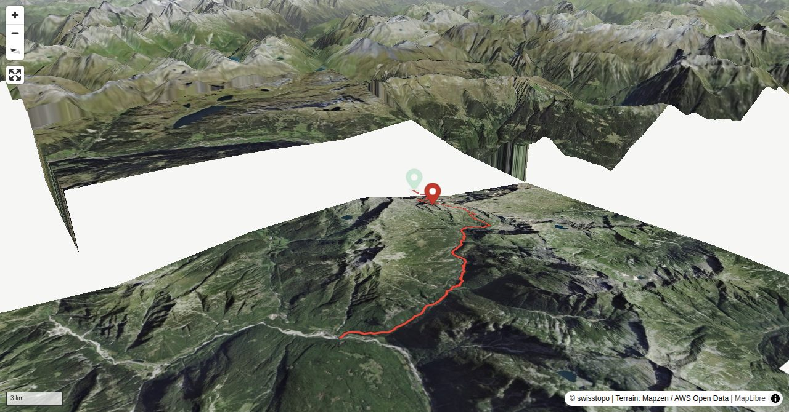

The canton of Ticino counts 50 threethousanders, but most of them are shared with its neighbours The Grisons, Uri, Valais and Italy. But not so Pizzo Campo Tencia: it is the highest all Ticino summit. In old pictures you can see that it was a heavily glaciered summit with huge seracs, and the first ascent in 1867 required many complicated detours. The glaciers have shrunk considerably in the meantime, and easier routes were discovered. Therefore, Pizzo Campo Tencia has become a premium target for alpine hikers.
(Pizzo Campo Tencia – Capanna Campo Tencia CAS: 1 h 45 min.)
Quick Facts
| Summit elevation | 3048 m |
|---|---|
| Difficulty | SAC T4+ Check the route notes below for terrain and commitment level. Guide |
| Trailhead | Capanna Campo Tencia CAS |
| Region | Southern Alps |
| Canton | Ticino |
| Distance | 14.6 km (out-and-back) |
| Total ascent | ~918 m |
| Elevation range | 743-3047 m |
| Route sources | SAC Route Portal |
Photos


Planning
i
i
sac_scale (precise T1–T6) with
swissTLM3D Wanderwegart
fallback where OSM is silent (coarser T2/T3 and T4+ buckets).
Coverage: OSM 87.1% · swisstopo 12.4% · unknown 0.0%.Elevations computed from the inlined GPX track (SwissTopo height API).
Loading forecast…
Start: Capanna Campo Tencia CAS (2139 m)
End: Prato (742 m)
3D Terrain View

Route Details
From Capanna Campo Tencia CAS via Pizzo Campo Tencia to Prato
- Capanna Campo Tencia CAS – Pizzo Campo Tencia: 2 h 30 min. (Pizzo Campo Tencia – Capanna Campo Tencia CAS: 1 h 45 min.) Pizzo Campo Tencia – Solveltra – Prato: 4 h.
Terrain & safety
Right at the beginning you need to scramble up a tiered ramp (faint path, at the end slightly exposed, grade I). Then follows a long rocky rib with more grade I passages. The summit ridge is made of blocks, and in early summer it is often snow-covered. Then an ice axe might come in handy. On its most important passages the route is well marked.
Source: SAC Route Portal
Field Reference
| Trailhead | Capanna Campo Tencia CAS | 46.44410, 8.73250 |
|---|---|---|
| Summit | Pizzo Campo Tencia (3048 m) | 46.42977, 8.72589 |
| End | Prato (742 m) | 46.39507, 8.65545 |
Coordinates are WGS84 decimal degrees (lat, lon). Emergency: 112 (general) or 1414 (Rega air rescue). Page URL: